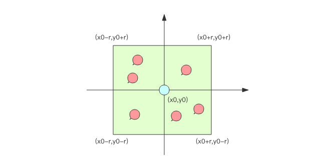

GeoHash #
Redis 在 3.2 版本以后增加了地理位置 GEO 模块，可以实现类似外卖 APP 附近的餐馆的功能。
地图元素的位置数据使用二维的经纬度表示，经度范围 (-180, 180]，纬度范围 (-90, 90]，纬度正负以赤道为界，北正南负，经度正负以
本初子午线 (英国格林尼治天文台) 为界，东正西负。
当两个元素的距离不是很远时，可以直接使用勾股定理就能算得元素之间的距离。平时使用的附近的人的功能，元素距离都不是很大，勾股 定理算距离足矣。不过需要注意的是，经纬度坐标的密度不一样 (地球是一个椭圆)，勾股定律计算平方差时之后再求和时，需要按一定的系数比加权 求和。
给定一个元素的坐标，然后计算这个坐标附近的其它元素，按照距离进行排序，如何做？

如果现在元素的经纬度坐标使用关系数据库 (元素 id, 经度 x, 纬度 y) 存储，如何计算？
不可能通过遍历来计算所有的元素和目标元素的距离然后再进行排序，这个计算量太大了。一般的方法都是通过矩形区域来限定元素的数量，然后对 区域内的元素进行全量距离计算再排序。这样可以明显减少计算量。如何划分矩形区域呢？可以指定一个半径 r，使用一条 SQL 就可以圈出来。当 用户对筛出来的结果不满意，那就扩大半径继续筛选。
select id from positions where x0-r < x < x0+r and y0-r < y < y0+r
可以在经纬度坐标加上双向复合索引 (x, y)，这样可以最大优化查询性能。
但是数据库查询性能毕竟有限，如果查询请求非常多，在高并发场合，这并不是一个好的方案。
GeoHash 算法 #
业界比较通用的地理位置距离排序算法是 GeoHash 算法。GeoHash 算法将二维的经纬度数据映射到一维的整数，这样所有的元素都将在挂载到一 条线上，距离靠近的二维坐标映射到一维后的点之间距离也会很接近。当我们想要计算附近的人时，首先将目标位置映射到这条线上，然后在这 个一维的线上获取附近的点就行了。
映射算法 #
将整个地球看成一个二维平面，然后划分成了一系列正方形的方格，就好比围棋棋盘。所有的地图元素坐标都将放置于唯一的方格中。方格越小，坐标 越精确。然后对这些方格进行整数编码，越是靠近的方格编码越是接近。如何编码？一个最简单的方案就是切蛋糕法。设想一个正方形的蛋糕摆在 你面前，二刀下去均分分成四块小正方形，这四个小正方形可以分别标记为 00,01,10,11 四个二进制整数。然后对每一个小正方形继续用二刀法切割 一下，这时每个小小正方形就可以使用 4bit 的二进制整数予以表示。然后继续切下去，正方形就会越来越小，二进制整数也会越来越长，精确度就会 越来越高。
真实算法中还会有很多其它刀法，最终编码出来的整数数字也都不一样。
编码之后，每个地图元素的坐标都将变成一个整数，通过这个整数可以还原出元素的坐标，整数越长，还原出来的坐标值的损失程度就越小。 对于附近的人这个功能而言，损失的一点精确度可以忽略不计。
GeoHash 算法会继续对这个整数做一次 base32 编码 (0-9,a-z 去掉 a,i,l,o 四个字母) 变成一个字符串。在 Redis 里面，经纬度使用 52 位 的整数进行编码，放进了 zset 里面，zset 的 value 是元素的 key，score 是 GeoHash 的 52 位整数值。zset 的 score 虽然是浮点数， 但是对于 52 位的整数值，它可以无损存储。
在使用 Redis 进行 Geo 查询时，通过 zset 的 score 排序就可以得到坐标附近的其它元素 (实际情况要复杂一些，不过这样理解足够了)，通过 将 score 还原成坐标值就可以得到元素的原始坐标。
Geo 指令 #
geoadd 指令携带集合名称以及多个经纬度名称三元组，注意这里可以加入多个三元组
127.0.0.1:6379> geoadd company 116.48105 39.996794 juejin
(integer) 1
127.0.0.1:6379> geoadd company 116.514203 39.905409 ireader
(integer) 1
127.0.0.1:6379> geoadd company 116.489033 40.007669 meituan
(integer) 1
127.0.0.1:6379> geoadd company 116.562108 39.787602 jd 116.334255 40.027400 xiaomi
(integer) 2
geo 存储结构上使用的是 zset，意味着可以使用 zset 相关的指令来操作 geo 数据，所以删除指令可以直接使用 zrem 指令。
geodist 指令可以用来计算两个元素之间的距离，携带集合名称、2 个名称和距离单位。
127.0.0.1:6379> geodist company juejin ireader km
"10.5501"
127.0.0.1:6379> geodist company juejin meituan km
"1.3878"
127.0.0.1:6379> geodist company juejin jd km
"24.2739"
127.0.0.1:6379> geodist company juejin xiaomi km
"12.9606"
127.0.0.1:6379> geodist company juejin juejin km
"0.0000"
掘金离美团最近，因为它们都在望京。距离单位可以是 m、km、ml、ft，分别代表米、千米、英里和尺。
geopos 指令可以获取集合中任意元素的经纬度坐标，可以一次获取多个。
127.0.0.1:6379> geopos company juejin
1) 1) "116.48104995489120483"
2) "39.99679348858259686"
127.0.0.1:6379> geopos company ireader
1) 1) "116.5142020583152771"
2) "39.90540918662494363"
127.0.0.1:6379> geopos company juejin ireader
1) 1) "116.48104995489120483"
2) "39.99679348858259686"
2) 1) "116.5142020583152771"
2) "39.90540918662494363"
获取的经纬度坐标和 geoadd 进去的坐标有轻微的误差，原因是 geohash 对二维坐标进行的一维映射是有损的，通过映射再还原回来的值会出现较 小的差别。
geohash 可以获取元素的经纬度编码字符串，上面已经提到，它是 base32 编码。
127.0.0.1:6379> geohash company ireader
1) "wx4g52e1ce0"
127.0.0.1:6379> geohash company juejin
1) "wx4gd94yjn0"
可以使用
geohash 来解编码。格式 http://geohash.org/wx4g52e1ce0。
georadiusbymember 指令是最为关键的指令，它可以用来查询指定元素附近的其它元素。
# 范围 20 公里以内最多 3 个元素按距离正排，它不会排除自身
127.0.0.1:6379> georadiusbymember company ireader 20 km count 3 asc
1) "ireader"
2) "juejin"
3) "meituan"
# 范围 20 公里以内最多 3 个元素按距离倒排
127.0.0.1:6379> georadiusbymember company ireader 20 km count 3 desc
1) "jd"
2) "meituan"
3) "juejin"
# 三个可选参数 withcoord withdist withhash 用来携带附加参数
# withdist 很有用，它可以用来显示距离
127.0.0.1:6379> georadiusbymember company ireader 20 km withcoord withdist withhash count 3 asc
1) 1) "ireader"
2) "0.0000"
3) (integer) 4069886008361398
4) 1) "116.5142020583152771"
2) "39.90540918662494363"
2) 1) "juejin"
2) "10.5501"
3) (integer) 4069887154388167
4) 1) "116.48104995489120483"
2) "39.99679348858259686"
3) 1) "meituan"
2) "11.5748"
3) (integer) 4069887179083478
4) 1) "116.48903220891952515"
2) "40.00766997707732031"
georadius 可以用来查询指定坐标附近的其它元素。参数和 georadiusbymember 基本一致。
127.0.0.1:6379> georadius company 116.514202 39.905409 20 km withdist count 3 asc
1) 1) "ireader"
2) "0.0000"
2) 1) "juejin"
2) "10.5501"
3) 1) "meituan"
2) "11.5748"
注意 #
地图应用中，车的数据、餐馆的数据可能会有百万千万条，如果使用 Redis 的 Geo 数据结构，它们将全部放在一个 zset 集合中。在 Redis 的集群 环境中，集合可能会从一个节点迁移到另一个节点，如果单个 key 的数据过大，会对集群的迁移工作造成较大的影响，在集群环境中单个 key 对应的 数据量不宜超过 1M，否则会导致集群迁移出现卡顿现象，影响线上服务的正常运行。
建议 Geo 的数据使用单独的 Redis 实例部署，不使用集群环境。
如果数据量过亿甚至更大，就需要对 Geo 数据进行拆分，按国家拆分、按省拆分，按市拆分，在人口特大城市甚至可以按区拆分。这样就可以显著降低 单个 zset 集合的大小。